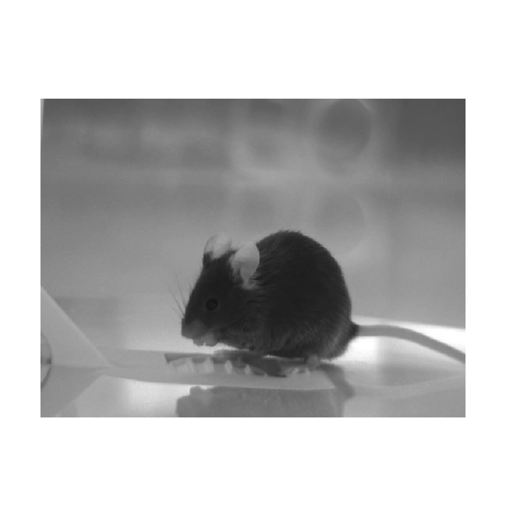

Note
Go to the end to download the full example code or to run this example in your browser via Binder
Filtering of a foraging mouse trajectory with manual vs learned parameters
The code below performs Kalman filtering and smoothing of a trajectory of the mouse shown on the left image below, as it forages in the arena shown on the right image below, with manual and learned parameters. Click on the images to see their larger versions.



Import packages
import sys
import os
import random
import pickle
import configparser
import numpy as np
import pandas as pd
import torch
import plotly.graph_objects as go
import ssm.inference.utils
import ssm.inference
import ssm.learning
Traceback (most recent call last):
File "/nfs/ghome/live/rapela/dev/work/ucl/gatsby-swc/gatsby/code/ssm_rapela/repos/ssm/examples/sphinx_gallery/kinematics/plotFilterFWGMouseTrajectoryManualVsLearnedParams.py", line 34, in <module>
import ssm.inference.utils
ModuleNotFoundError: No module named 'ssm.inference.utils'; 'ssm.inference' is not a package
Setup configuration variables
start_position = 0
number_positions = 10000
color_measures = "black"
color_pattern_filtered = "rgba(255,0,0,{:f})"
cb_alpha = 0.3
data_filename = "http://www.gatsby.ucl.ac.uk/~rapela/svGPFA/data/positions_session003_start0.00_end15548.27.csv"
Get the mouse position measurements
data = pd.read_csv(data_filename)
data = data.iloc[start_position:start_position+number_positions,:]
y = np.transpose(data[["x", "y"]].to_numpy())
Kalman filter matrices for inference
date_times = pd.to_datetime(data["time"])
dt = (date_times.iloc[1]-date_times.iloc[0]).total_seconds()
B, _, Qe, Z, _ = ssm.inference.utils.getLDSmatricesForKinematics_np(
dt=dt, sigma_a=np.nan, pos_x_R_std=np.nan, pos_y_R_std=np.nan)
Filtering with manual parameters
pos_x0_manual = y[0, 0]
pos_y0_manual = y[1, 0]
vel_x0_manual = 0.0
vel_y0_manual = 0.0
acc_x0_manual = 0.0
acc_y0_manual = 0.0
sigma_a_manual = 1e1
sigma_x_manual = 1e1
sigma_y_manual = 1e1
sqrt_diag_V0_value_manual = 1e-3
m0_manual = np.array([pos_x0_manual, vel_x0_manual, acc_x0_manual,
pos_y0_manual, vel_y0_manual, acc_y0_manual], dtype=np.double)
R_manual = np.diag([sigma_x_manual**2, sigma_y_manual**2])
V0_manual = np.diag(np.ones(len(m0_manual))*sqrt_diag_V0_value_manual**2)
Q_manual = Qe*sigma_a_manual
filterRes_manual = ssm.inference.filterLDS_SS_withMissingValues_np(
y=y, B=B, Q=Q_manual, m0=m0_manual, V0=V0_manual, Z=Z, R=R_manual)
smoothRes_manual = ssm.inference.smoothLDS_SS(
B=B, xnn=filterRes_manual["xnn"], Pnn=filterRes_manual["Pnn"],
xnn1=filterRes_manual["xnn1"], Pnn1=filterRes_manual["Pnn1"],
m0=m0_manual, V0=V0_manual)
Filtering with learned parameters
Learn parameters
skip_estimation_sigma_a = False
skip_estimation_R = False
skip_estimation_m0 = False
skip_estimation_V0 = False
lbfgs_max_iter = 2
lbfgs_tolerance_grad = -1
lbfgs_tolerance_change = 1e-3
lbfgs_lr = 1e-4
lbfgs_n_epochs = 1
lbfgs_tol = 1e-3
Qe_reg_param_learned = 1e-5
pos_x_R_std0_torch = torch.DoubleTensor([sigma_x_manual])
pos_y_R_std0_torch = torch.DoubleTensor([sigma_y_manual])
m0_torch = torch.from_numpy(m0_manual.copy())
sqrt_diag_V0_torch = torch.DoubleTensor([sqrt_diag_V0_value_manual
for i in range(len(m0_manual))])
if Qe_reg_param_learned is not None:
Qe_regularized_learned = Qe + Qe_reg_param_learned * np.eye(Qe.shape[0])
else:
Qe_regularized_learned = Qe
y_torch = torch.from_numpy(y.astype(np.double))
B_torch = torch.from_numpy(B.astype(np.double))
Qe_regularized_learned_torch = torch.from_numpy(Qe_regularized_learned.astype(np.double))
Z_torch = torch.from_numpy(Z.astype(np.double))
vars_to_estimate = {}
if skip_estimation_sigma_a:
vars_to_estimate["sigma_a"] = False
else:
vars_to_estimate["sigma_a"] = True
if skip_estimation_R:
vars_to_estimate["sqrt_diag_R"] = False
vars_to_estimate["R"] = False
vars_to_estimate["pos_x_R_std"] = False
vars_to_estimate["pos_y_R_std"] = False
else:
vars_to_estimate["sqrt_diag_R"] = True
vars_to_estimate["R"] = True
vars_to_estimate["pos_x_R_std"] = True
vars_to_estimate["pos_y_R_std"] = True
if skip_estimation_m0:
vars_to_estimate["m0"] = False
else:
vars_to_estimate["m0"] = True
if skip_estimation_V0:
vars_to_estimate["sqrt_diag_V0"] = False
vars_to_estimate["V0"] = False
else:
vars_to_estimate["sqrt_diag_V0"] = True
vars_to_estimate["V0"] = True
optim_res_learned = ssm.learning.torch_lbfgs_optimize_SS_inference_diagV0(
y=y_torch, B=B_torch, sigma_a0=sigma_a_manual,
Qe=Qe_regularized_learned_torch, Z=Z_torch, pos_x_R_std0=pos_x_R_std0_torch,
pos_y_R_std0=pos_y_R_std0_torch, m0_0=m0_torch,
sqrt_diag_V0_0=sqrt_diag_V0_torch, max_iter=lbfgs_max_iter, lr=lbfgs_lr,
vars_to_estimate=vars_to_estimate, tolerance_grad=lbfgs_tolerance_grad,
tolerance_change=lbfgs_tolerance_change, n_epochs=lbfgs_n_epochs,
tol=lbfgs_tol)
Filter
Q_learned = optim_res_learned["estimates"]["sigma_a"].item()**2*Qe
m0_learned = optim_res_learned["estimates"]["m0"].numpy()
V0_learned = np.diag(optim_res_learned["estimates"]["sqrt_diag_V0"].numpy()**2)
R_learned = np.diag([optim_res_learned["estimates"]["pos_x_R_std"].item()**2,
optim_res_learned["estimates"]["pos_y_R_std"].item()**2])
filterRes_learned = ssm.inference.filterLDS_SS_withMissingValues_np(
y=y, B=B, Q=Q_learned, m0=m0_learned, V0=V0_learned, Z=Z, R=R_learned)
smoothRes_learned = ssm.inference.smoothLDS_SS(
B=B, xnn=filterRes_learned["xnn"], Pnn=filterRes_learned["Pnn"],
xnn1=filterRes_learned["xnn1"], Pnn1=filterRes_learned["Pnn1"], m0=m0_learned, V0=V0_learned)
Plots
def get_fig_kinematics_vs_time(
time,
measured_x, measured_y,
finite_diff_x, finite_diff_y,
manual_mean_x, manual_mean_y,
manual_ci_x_upper, manual_ci_y_upper,
manual_ci_x_lower, manual_ci_y_lower,
learned_mean_x, learned_mean_y,
learned_ci_x_upper, learned_ci_y_upper,
learned_ci_x_lower, learned_ci_y_lower,
cb_alpha,
color_true,
color_measured,
color_finite_diff,
color_manual_pattern,
color_learned_pattern,
xlabel, ylabel):
fig = go.Figure()
if measured_x is not None:
trace_mes_x = go.Scatter(
x=time, y=measured_x,
mode="markers",
marker={"color": color_measured},
name="measured x",
showlegend=True,
)
fig.add_trace(trace_mes_x)
if measured_y is not None:
trace_mes_y = go.Scatter(
x=time, y=measured_y,
mode="markers",
marker={"color": color_measured},
name="measured y",
showlegend=True,
)
fig.add_trace(trace_mes_y)
if finite_diff_x is not None:
trace_fd_x = go.Scatter(
x=time, y=finite_diff_x,
mode="markers",
marker={"color": color_finite_diff},
name="finite difference x",
showlegend=True,
)
fig.add_trace(trace_fd_x)
if finite_diff_y is not None:
trace_fd_y = go.Scatter(
x=time, y=finite_diff_y,
mode="markers",
marker={"color": color_finite_diff},
name="finite difference y",
showlegend=True,
)
fig.add_trace(trace_fd_y)
trace_manual_x = go.Scatter(
x=time, y=manual_mean_x,
mode="markers",
marker={"color": color_manual_pattern.format(1.0)},
name="manual x",
showlegend=True,
legendgroup="manual_x",
)
fig.add_trace(trace_manual_x)
trace_manual_x_cb = go.Scatter(
x=np.concatenate([time, time[::-1]]),
y=np.concatenate([manual_ci_x_upper, manual_ci_x_lower[::-1]]),
fill="toself",
fillcolor=color_manual_pattern.format(cb_alpha),
line=dict(color=color_manual_pattern.format(0.0)),
showlegend=False,
legendgroup="manual_x",
)
fig.add_trace(trace_manual_x_cb)
trace_manual_y = go.Scatter(
x=time, y=manual_mean_y,
mode="markers",
marker={"color": color_manual_pattern.format(1.0)},
name="manual y",
showlegend=True,
legendgroup="manual_y",
)
fig.add_trace(trace_manual_y)
trace_manual_y_cb = go.Scatter(
x=np.concatenate([time, time[::-1]]),
y=np.concatenate([manual_ci_y_upper, manual_ci_y_lower[::-1]]),
fill="toself",
fillcolor=color_manual_pattern.format(cb_alpha),
line=dict(color=color_manual_pattern.format(0.0)),
showlegend=False,
legendgroup="manual_y",
)
fig.add_trace(trace_manual_y_cb)
trace_learned_x = go.Scatter(
x=time, y=learned_mean_x,
mode="markers",
marker={"color": color_learned_pattern.format(1.0)},
name="learned x",
showlegend=True,
legendgroup="learned_x",
)
fig.add_trace(trace_learned_x)
trace_learned_x_cb = go.Scatter(
x=np.concatenate([time, time[::-1]]),
y=np.concatenate([learned_ci_x_upper, learned_ci_x_lower[::-1]]),
fill="toself",
fillcolor=color_learned_pattern.format(cb_alpha),
line=dict(color=color_learned_pattern.format(0.0)),
showlegend=False,
legendgroup="learned_x",
)
fig.add_trace(trace_learned_x_cb)
trace_learned_y = go.Scatter(
x=time, y=learned_mean_y,
mode="markers",
marker={"color": color_learned_pattern.format(1.0)},
name="learned y",
showlegend=True,
legendgroup="learned_y",
)
fig.add_trace(trace_learned_y)
trace_learned_y_cb = go.Scatter(
x=np.concatenate([time, time[::-1]]),
y=np.concatenate([learned_ci_y_upper, learned_ci_y_lower[::-1]]),
fill="toself",
fillcolor=color_learned_pattern.format(cb_alpha),
line=dict(color=color_learned_pattern.format(0.0)),
showlegend=False,
legendgroup="learned_y",
)
fig.add_trace(trace_learned_y_cb)
fig.update_layout(xaxis_title=xlabel,
yaxis_title=ylabel,
paper_bgcolor='rgba(0,0,0,0)',
plot_bgcolor='rgba(0,0,0,0)',
)
return fig
Set variables for plotting
N = y.shape[1]
time = np.arange(0, N*dt, dt)
filtered_means_manual = filterRes_manual["xnn"]
filtered_covs_manual = filterRes_manual["Pnn"]
filtered_std_x_y_manual = np.sqrt(np.diagonal(a=filtered_covs_manual, axis1=0, axis2=1))
filtered_means_learned = filterRes_learned["xnn"]
filtered_covs_learned = filterRes_learned["Pnn"]
filtered_std_x_y_learned = np.sqrt(np.diagonal(a=filtered_covs_learned, axis1=0, axis2=1))
smoothed_means_manual = smoothRes_manual["xnN"]
smoothed_covs_manual = smoothRes_manual["PnN"]
smoothed_std_x_y_manual = np.sqrt(np.diagonal(a=smoothed_covs_manual, axis1=0, axis2=1))
smoothed_means_learned = smoothRes_learned["xnN"]
smoothed_covs_learned = smoothRes_learned["PnN"]
smoothed_std_x_y_learned = np.sqrt(np.diagonal(a=smoothed_covs_learned, axis1=0, axis2=1))
color_true = "blue"
color_measured = "black"
color_finite_diff = "blue"
color_manual_pattern = "rgba(255,165,0,{:f})"
color_learned_pattern = "rgba(255,0,0,{:f})"
cb_alpha = 0.3
Positions filtered
measured_x = y[0, :]
measured_y = y[1, :]
finite_diff_x = None
finite_diff_y = None
filtered_mean_x_manual = filtered_means_manual[0, 0, :]
filtered_mean_y_manual = filtered_means_manual[3, 0, :]
filtered_mean_x_learned = filtered_means_learned[0, 0, :]
filtered_mean_y_learned = filtered_means_learned[3, 0, :]
filtered_ci_x_upper_manual = filtered_mean_x_manual + 1.96*filtered_std_x_y_manual[:, 0]
filtered_ci_x_lower_manual = filtered_mean_x_manual - 1.96*filtered_std_x_y_manual[:, 0]
filtered_ci_y_upper_manual = filtered_mean_y_manual + 1.96*filtered_std_x_y_manual[:, 3]
filtered_ci_y_lower_manual = filtered_mean_y_manual - 1.96*filtered_std_x_y_manual[:, 3]
filtered_ci_x_upper_learned = filtered_mean_x_learned + 1.96*filtered_std_x_y_learned[:, 0]
filtered_ci_x_lower_learned = filtered_mean_x_learned - 1.96*filtered_std_x_y_learned[:, 0]
filtered_ci_y_upper_learned = filtered_mean_y_learned + 1.96*filtered_std_x_y_learned[:, 3]
filtered_ci_y_lower_learned = filtered_mean_y_learned - 1.96*filtered_std_x_y_learned[:, 3]
fig = get_fig_kinematics_vs_time(
time=time,
measured_x=measured_x, measured_y=measured_y,
finite_diff_x=finite_diff_x, finite_diff_y=finite_diff_y,
manual_mean_x=filtered_mean_x_manual,
manual_mean_y=filtered_mean_y_manual,
manual_ci_x_upper=filtered_ci_x_upper_manual,
manual_ci_y_upper=filtered_ci_y_upper_manual,
manual_ci_x_lower=filtered_ci_x_lower_manual,
manual_ci_y_lower=filtered_ci_y_lower_manual,
learned_mean_x=filtered_mean_x_learned,
learned_mean_y=filtered_mean_y_learned,
learned_ci_x_upper=filtered_ci_x_upper_learned,
learned_ci_y_upper=filtered_ci_y_upper_learned,
learned_ci_x_lower=filtered_ci_x_lower_learned,
learned_ci_y_lower=filtered_ci_y_lower_learned,
cb_alpha=cb_alpha,
color_true=color_true, color_measured=color_measured,
color_finite_diff=color_finite_diff,
color_learned_pattern=color_learned_pattern,
color_manual_pattern=color_manual_pattern,
xlabel="Time (sec)", ylabel="Position (pixels)")
fig
Positions smoothed
measured_x = y[0, :]
measured_y = y[1, :]
finite_diff_x = None
finite_diff_y = None
smoothed_mean_x_manual = smoothed_means_manual[0, 0, :]
smoothed_mean_y_manual = smoothed_means_manual[3, 0, :]
smoothed_mean_x_learned = smoothed_means_learned[0, 0, :]
smoothed_mean_y_learned = smoothed_means_learned[3, 0, :]
smoothed_ci_x_upper_manual = smoothed_mean_x_manual + 1.96*smoothed_std_x_y_manual[:, 0]
smoothed_ci_x_lower_manual = smoothed_mean_x_manual - 1.96*smoothed_std_x_y_manual[:, 0]
smoothed_ci_y_upper_manual = smoothed_mean_y_manual + 1.96*smoothed_std_x_y_manual[:, 3]
smoothed_ci_y_lower_manual = smoothed_mean_y_manual - 1.96*smoothed_std_x_y_manual[:, 3]
smoothed_ci_x_upper_learned = smoothed_mean_x_learned + 1.96*smoothed_std_x_y_learned[:, 0]
smoothed_ci_x_lower_learned = smoothed_mean_x_learned - 1.96*smoothed_std_x_y_learned[:, 0]
smoothed_ci_y_upper_learned = smoothed_mean_y_learned + 1.96*smoothed_std_x_y_learned[:, 3]
smoothed_ci_y_lower_learned = smoothed_mean_y_learned - 1.96*smoothed_std_x_y_learned[:, 3]
fig = get_fig_kinematics_vs_time(
time=time,
measured_x=measured_x, measured_y=measured_y,
finite_diff_x=finite_diff_x, finite_diff_y=finite_diff_y,
manual_mean_x=smoothed_mean_x_manual,
manual_mean_y=smoothed_mean_y_manual,
manual_ci_x_upper=smoothed_ci_x_upper_manual,
manual_ci_y_upper=smoothed_ci_y_upper_manual,
manual_ci_x_lower=smoothed_ci_x_lower_manual,
manual_ci_y_lower=smoothed_ci_y_lower_manual,
learned_mean_x=smoothed_mean_x_learned,
learned_mean_y=smoothed_mean_y_learned,
learned_ci_x_upper=smoothed_ci_x_upper_learned,
learned_ci_y_upper=smoothed_ci_y_upper_learned,
learned_ci_x_lower=smoothed_ci_x_lower_learned,
learned_ci_y_lower=smoothed_ci_y_lower_learned,
cb_alpha=cb_alpha,
color_true=color_true, color_measured=color_measured,
color_finite_diff=color_finite_diff,
color_learned_pattern=color_learned_pattern,
color_manual_pattern=color_manual_pattern,
xlabel="Time (sec)", ylabel="Position (pixels)")
fig
Velocities filtered
measured_x = None
measured_y = None
finite_diff_x = np.diff(y[0, :])/dt
finite_diff_y = np.diff(y[1, :])/dt
filtered_mean_x_manual = filtered_means_manual[1, 0, :]
filtered_mean_y_manual = filtered_means_manual[4, 0, :]
filtered_mean_x_learned = filtered_means_learned[1, 0, :]
filtered_mean_y_learned = filtered_means_learned[4, 0, :]
filtered_ci_x_upper_manual = filtered_mean_x_manual + 1.96*filtered_std_x_y_manual[:, 1]
filtered_ci_x_lower_manual = filtered_mean_x_manual - 1.96*filtered_std_x_y_manual[:, 1]
filtered_ci_y_upper_manual= filtered_mean_y_manual + 1.96*filtered_std_x_y_manual[:, 4]
filtered_ci_y_lower_manual = filtered_mean_y_manual - 1.96*filtered_std_x_y_manual[:, 4]
filtered_ci_x_upper_learned = filtered_mean_x_learned + 1.96*filtered_std_x_y_learned[:, 1]
filtered_ci_x_lower_learned = filtered_mean_x_learned - 1.96*filtered_std_x_y_learned[:, 1]
filtered_ci_y_upper_learned= filtered_mean_y_learned + 1.96*filtered_std_x_y_learned[:, 4]
filtered_ci_y_lower_learned = filtered_mean_y_learned - 1.96*filtered_std_x_y_learned[:, 4]
fig = get_fig_kinematics_vs_time(
time=time,
measured_x=measured_x, measured_y=measured_y,
finite_diff_x=finite_diff_x, finite_diff_y=finite_diff_y,
manual_mean_x=filtered_mean_x_manual, manual_mean_y=filtered_mean_y_manual,
manual_ci_x_upper=filtered_ci_x_upper_manual,
manual_ci_y_upper=filtered_ci_y_upper_manual,
manual_ci_x_lower=filtered_ci_x_lower_manual,
manual_ci_y_lower=filtered_ci_y_lower_manual,
learned_mean_x=filtered_mean_x_learned, learned_mean_y=filtered_mean_y_learned,
learned_ci_x_upper=filtered_ci_x_upper_learned,
learned_ci_y_upper=filtered_ci_y_upper_learned,
learned_ci_x_lower=filtered_ci_x_lower_learned,
learned_ci_y_lower=filtered_ci_y_lower_learned,
cb_alpha=cb_alpha,
color_true=color_true, color_measured=color_measured,
color_finite_diff=color_finite_diff,
color_manual_pattern=color_manual_pattern,
color_learned_pattern=color_learned_pattern,
xlabel="Time (sec)", ylabel="Velocity (pixels/sec)")
fig
Velocities smoothed
measured_x = None
measured_y = None
finite_diff_x = np.diff(y[0, :])/dt
finite_diff_y = np.diff(y[1, :])/dt
smoothed_mean_x_manual = smoothed_means_manual[1, 0, :]
smoothed_mean_y_manual = smoothed_means_manual[4, 0, :]
smoothed_mean_x_learned = smoothed_means_learned[1, 0, :]
smoothed_mean_y_learned = smoothed_means_learned[4, 0, :]
smoothed_ci_x_upper_manual = smoothed_mean_x_manual + 1.96*smoothed_std_x_y_manual[:, 1]
smoothed_ci_x_lower_manual = smoothed_mean_x_manual - 1.96*smoothed_std_x_y_manual[:, 1]
smoothed_ci_y_upper_manual= smoothed_mean_y_manual + 1.96*smoothed_std_x_y_manual[:, 4]
smoothed_ci_y_lower_manual = smoothed_mean_y_manual - 1.96*smoothed_std_x_y_manual[:, 4]
smoothed_ci_x_upper_learned = smoothed_mean_x_learned + 1.96*smoothed_std_x_y_learned[:, 1]
smoothed_ci_x_lower_learned = smoothed_mean_x_learned - 1.96*smoothed_std_x_y_learned[:, 1]
smoothed_ci_y_upper_learned= smoothed_mean_y_learned + 1.96*smoothed_std_x_y_learned[:, 4]
smoothed_ci_y_lower_learned = smoothed_mean_y_learned - 1.96*smoothed_std_x_y_learned[:, 4]
fig = get_fig_kinematics_vs_time(
time=time,
measured_x=measured_x, measured_y=measured_y,
finite_diff_x=finite_diff_x, finite_diff_y=finite_diff_y,
manual_mean_x=smoothed_mean_x_manual, manual_mean_y=smoothed_mean_y_manual,
manual_ci_x_upper=smoothed_ci_x_upper_manual,
manual_ci_y_upper=smoothed_ci_y_upper_manual,
manual_ci_x_lower=smoothed_ci_x_lower_manual,
manual_ci_y_lower=smoothed_ci_y_lower_manual,
learned_mean_x=smoothed_mean_x_learned, learned_mean_y=smoothed_mean_y_learned,
learned_ci_x_upper=smoothed_ci_x_upper_learned,
learned_ci_y_upper=smoothed_ci_y_upper_learned,
learned_ci_x_lower=smoothed_ci_x_lower_learned,
learned_ci_y_lower=smoothed_ci_y_lower_learned,
cb_alpha=cb_alpha,
color_true=color_true, color_measured=color_measured,
color_finite_diff=color_finite_diff,
color_manual_pattern=color_manual_pattern,
color_learned_pattern=color_learned_pattern,
xlabel="Time (sec)", ylabel="Velocity (pixels/sec)")
fig
Accelerations filtered
measured_x = None
measured_y = None
finite_diff_x = np.diff(np.diff(y[0, :]))/dt**2
finite_diff_y = np.diff(np.diff(y[1, :]))/dt**2
filtered_mean_x_manual = filtered_means_manual[2, 0, :]
filtered_mean_y_manual = filtered_means_manual[5, 0, :]
filtered_mean_x_learned = filtered_means_learned[2, 0, :]
filtered_mean_y_learned = filtered_means_learned[5, 0, :]
filtered_ci_x_upper_manual = filtered_mean_x_manual + 1.96*filtered_std_x_y_manual[:, 2]
filtered_ci_x_lower_manual = filtered_mean_x_manual - 1.96*filtered_std_x_y_manual[:, 2]
filtered_ci_y_upper_manual = filtered_mean_y_manual + 1.96*filtered_std_x_y_manual[:, 5]
filtered_ci_y_lower_manual = filtered_mean_y_manual - 1.96*filtered_std_x_y_manual[:, 5]
filtered_ci_x_upper_learned = filtered_mean_x_learned + 1.96*filtered_std_x_y_learned[:, 2]
filtered_ci_x_lower_learned = filtered_mean_x_learned - 1.96*filtered_std_x_y_learned[:, 2]
filtered_ci_y_upper_learned = filtered_mean_y_learned + 1.96*filtered_std_x_y_learned[:, 5]
filtered_ci_y_lower_learned = filtered_mean_y_learned - 1.96*filtered_std_x_y_learned[:, 5]
fig = get_fig_kinematics_vs_time(
time=time,
measured_x=measured_x, measured_y=measured_y,
finite_diff_x=finite_diff_x, finite_diff_y=finite_diff_y,
manual_mean_x=filtered_mean_x_manual, manual_mean_y=filtered_mean_y_manual,
manual_ci_x_upper=filtered_ci_x_upper_manual,
manual_ci_y_upper=filtered_ci_y_upper_manual,
manual_ci_x_lower=filtered_ci_x_lower_manual,
manual_ci_y_lower=filtered_ci_y_lower_manual,
learned_mean_x=filtered_mean_x_learned, learned_mean_y=filtered_mean_y_learned,
learned_ci_x_upper=filtered_ci_x_upper_learned,
learned_ci_y_upper=filtered_ci_y_upper_learned,
learned_ci_x_lower=filtered_ci_x_lower_learned,
learned_ci_y_lower=filtered_ci_y_lower_learned,
cb_alpha=cb_alpha,
color_true=color_true, color_measured=color_measured,
color_finite_diff=color_finite_diff,
color_manual_pattern=color_manual_pattern,
color_learned_pattern=color_learned_pattern,
xlabel="Time (sec)", ylabel="Acceleration (pixels/sec^2)")
fig
Accelerations smoothed
measured_x = None
measured_y = None
finite_diff_x = np.diff(np.diff(y[0, :]))/dt**2
finite_diff_y = np.diff(np.diff(y[1, :]))/dt**2
smoothed_mean_x_manual = smoothed_means_manual[2, 0, :]
smoothed_mean_y_manual = smoothed_means_manual[5, 0, :]
smoothed_mean_x_learned = smoothed_means_learned[2, 0, :]
smoothed_mean_y_learned = smoothed_means_learned[5, 0, :]
smoothed_ci_x_upper_manual = smoothed_mean_x_manual + 1.96*smoothed_std_x_y_manual[:, 2]
smoothed_ci_x_lower_manual = smoothed_mean_x_manual - 1.96*smoothed_std_x_y_manual[:, 2]
smoothed_ci_y_upper_manual = smoothed_mean_y_manual + 1.96*smoothed_std_x_y_manual[:, 5]
smoothed_ci_y_lower_manual = smoothed_mean_y_manual - 1.96*smoothed_std_x_y_manual[:, 5]
smoothed_ci_x_upper_learned = smoothed_mean_x_learned + 1.96*smoothed_std_x_y_learned[:, 2]
smoothed_ci_x_lower_learned = smoothed_mean_x_learned - 1.96*smoothed_std_x_y_learned[:, 2]
smoothed_ci_y_upper_learned = smoothed_mean_y_learned + 1.96*smoothed_std_x_y_learned[:, 5]
smoothed_ci_y_lower_learned = smoothed_mean_y_learned - 1.96*smoothed_std_x_y_learned[:, 5]
fig = get_fig_kinematics_vs_time(
time=time,
measured_x=measured_x, measured_y=measured_y,
finite_diff_x=finite_diff_x, finite_diff_y=finite_diff_y,
manual_mean_x=smoothed_mean_x_manual, manual_mean_y=smoothed_mean_y_manual,
manual_ci_x_upper=smoothed_ci_x_upper_manual,
manual_ci_y_upper=smoothed_ci_y_upper_manual,
manual_ci_x_lower=smoothed_ci_x_lower_manual,
manual_ci_y_lower=smoothed_ci_y_lower_manual,
learned_mean_x=smoothed_mean_x_learned, learned_mean_y=smoothed_mean_y_learned,
learned_ci_x_upper=smoothed_ci_x_upper_learned,
learned_ci_y_upper=smoothed_ci_y_upper_learned,
learned_ci_x_lower=smoothed_ci_x_lower_learned,
learned_ci_y_lower=smoothed_ci_y_lower_learned,
cb_alpha=cb_alpha,
color_true=color_true, color_measured=color_measured,
color_finite_diff=color_finite_diff,
color_manual_pattern=color_manual_pattern,
color_learned_pattern=color_learned_pattern,
xlabel="Time (sec)", ylabel="Acceleration (pixels/sec^2)")
fig
Total running time of the script: ( 0 minutes 0.001 seconds)